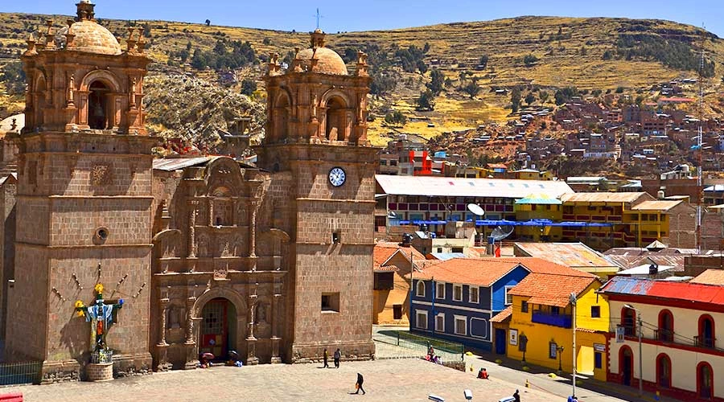

En esta primera pagina web, practicaremos el uso de algunas etiquetas basicas en HTML
Vivo en la ciudad de Puno
Vivo en la ciudad de Puno
La historia de Puno se remonta a culturas prehispánicas como la Tiawanaco, Colla y Aymara, pero su fundación española data de 1668 por el virrey Conde de Lemos. Se estableció en la zona del actual asentamiento indígena, luego del colapso del centro minero colonial de San Luis de Alba por los enfrentamientos entre mineros, y fue nombrada San Carlos de Puno en honor al rey Carlos II y a San Carlos Borromeo. La región se convirtió en un importante centro minero y comercial durante la colonia. En la República, la ciudad fue sede de importantes eventos, como la visita de Simón Bolívar, y en 1822 se creó el departamento.
Ultimas noticias
La noticia es importante porque informa al público sobre hechos actuales y relevantes, lo que permite a las personas tomar decisiones informadas, mantenerse al día con el mundo y ampliar su perspectiva. Cumple una función social vital al divulgar información pública y es fundamental para sostener una democracia saludable. También sirve como fuente de entretenimiento, cultura, y ayuda a distinguir entre información veraz y desinformación.
Ceviche peruano lo mejor.
El ceviche es considerado el mejor plato peruano por ser un símbolo de la identidad y diversidad cultural del país, reconocido incluso como Patrimonio Cultural Inmaterial de la Humanidad por la UNESCO. Además de su valor cultural, destaca por su frescura, sabor único y el equilibrio nutricional que aporta, combinando pescado, vegetales, carbohidratos y picante en una preparación rápida y versátil.